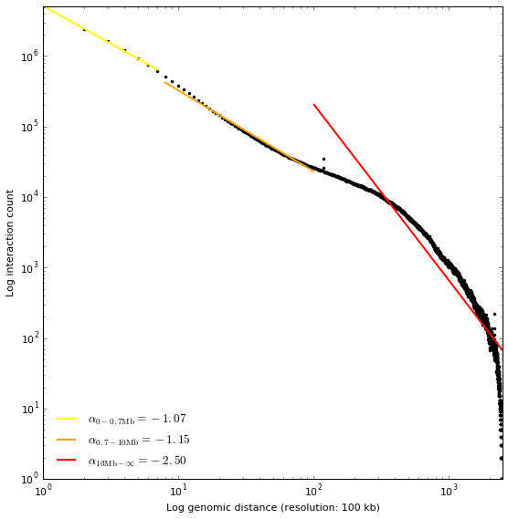

Mapping paired-end reads from NGS experiment (with GEM)¶
Download and index reference genome¶
Download last human reference genome from ucsc: http://hgdownload.cse.ucsc.edu/goldenPath/hg38/bigZips/ It’s better to download the file that contains each chromosome separately (like this we could only keep those which we are interested in): hg38.chromFa.tar.gz Uncompress the genome
tar -xzf hg38.chromFa.tar.gz
Check the header of the fasta files (it’s important to know how chromosomes are called in these files):
head chr1.fa
Create a single file with all chromosomes together:
cat chr1.fa chr2.fa chr3.fa chr4.fa chr5.fa chr6.fa chr7.fa chr8.fa chr9.fa chr10.fa chr11.fa chr12.fa chr13.fa chr14.fa chr15.fa chr16.fa chr17.fa chr18.fa chr19.fa chr20.fa chr21.fa chr22.fa chrX.fa chrY.fa chrM.fa > hg38.fa
Index reference genome:
gemtools index -i hg38.fa -t 8
Creates a file hg38.gem that we will be used for the mapping.
Mapping¶
Retrieving Hi-C experiment SRA format¶
Along this tutorial we are going to use the dataset from [Rao21014]_ that can be downloaded at: http://www.ncbi.nlm.nih.gov/geo/query/acc.cgi?acc=GSE63525
For this part of the tutorial we are going to work with the experiments conducted in Homo sapiens GM12878 cell line with three diferent restriction enzymes.
First we need to convert SRA files in FASTQ format, as TADbit does not support reading directly from SRA. For this purpose we may want to use the SRA-toolkit from the NCBI (https://github.com/ncbi/sratoolkit). We finally shall endup with a single FASTQ file per experimental replica, with commands like (can last for hours):
HindIII dilution Hi-C replica:
fastq-dump -A SRR1658625 -DQ '+' --defline-seq '@$ac.$si' --split-files -X 50000000 -O HiC035
NcoI dilution Hi-C replica:
fastq-dump -A SRR1658632 -DQ '+' --defline-seq '@$ac.$si' --split-files -X 50000000 -O HiC036
MboI in situ Hi-C replica:
fastq-dump -A SRR1658572 -DQ '+' --defline-seq '@$ac.$si' -X 50000000 -O HiC003
Note
the parameter used here for fastq-dump are for generating clean FASTQ files, -DQ ‘+’ tells to put a single plus sign as header of the quality input, –defline-seq ‘@$ac.$si’ reduces the information in the headers to the accession number and the read id, –split-files is to separate read1 and read2 in diferent files (note that it is only used in the two first examples in order to show different cases), finally -X 50000000 is to download only 50 Milion reads.
Note
FASTQ files can be used compressed in order to save space. TADbit recognize [DSRC](https://github.com/lrog/dsrc), gunzip, bunzip2 and zip compression formats
First quality check on the data¶
the compressed FASTQ files should be:
! wc -l HiC036/SRR1658632_1.fastq
10354635 HiC036/SRR1658632_1.fastq
Usig these files directly we can infer the quality of the Hi-C experiment with TADbit:
from pytadbit.utils.fastq_utils import quality_plot
quality_plot('HiC003/SRR1658572.fastq', nreads=1000000, r_enz='MboI', paired=True)
(10.9159, 38.5393)
The plot on the top represents the typical per nucleotide quality profile of NGS reads, with the addition of the proportion of “N” found at each position. This plot is done over the first milion reads, as this is usually enough to asses the general quality of the experiment.
The second plot, is specific to Hi-C experiments. Given a restriction enzyme the function searches for the presence of ligation sites and of undigested restriction enzyme sites. Depending on the enzyme used the function can differentiate between dangling-ends and undigested sites.
From this proportion some qulaity statistic can be inferred before the mapping: - The percentage of digested sites wich is the ratio of digested over undigested sites found over the reads analyzed - The percentage os dangling-ends which is the number of time a digested site is found at the begining of a read - The percentage of ligation sites which is the number of times a ligation site is found in the processed reads. This number has to be transfrom to reflect the reality as it corresponds only to the sequenced part of the DNA fragment. For example, in this case, if the mean fragment size is 400 nucleotides and we found that 11% of 1 million reads present 1 ligation site, we should expect a proportional number of ligation sites in the insert (unsequenced space between the ends of the reads). Thus, in this case we would have a final number 22% of the reads with at least one ligation site.
For the other replicates used in this tutorial, the enzymes (DpnII and HindIII) allow to differentiate between dangling-ends and undigested sites, as their cut site is inside the recognition pattern (note that in the bellow plot we are now only seing one of the ends of the reads as we used the ``–split-file`` we have the one end per file):
quality_plot('HiC035/SRR1658625_1.fastq', nreads=1000000, r_enz='HindIII')

(3.1608, 11.3747)
quality_plot('HiC036/SRR1658632_1.fastq', nreads=1000000, r_enz='NcoI')

(1.2954, 17.1003)
Note
the function returns two numbers that can be used to further analyze the quality of the reads, e.g. when, after mapping we can confirm the mean size of the insert. These numbers are the proportion of dangling-ends and the proportion of ligation sites.
Mapping¶
TADbit implements a flexible mapping that can be set to mimmic either the iterative mapping as proposed by [Imakaev2012]_ , or other mapping strategies based on the restriction enzyme fragments we call them fragment-based mapping.
import pytadbit
from pytadbit.mapping.mapper import full_mapping
Iterative mapping¶
The bellow example would be following the iterative mapping strategy, defining the windows over which to do the iterations:
print 'Mapping the first end of the read\n'
mapped_r1 = full_mapping('/scratch/db/Genomes/index_files/Homo_sapiens-79/Homo_sapiens.gem',
'/scratch/test/rao2014/HiC003/SRR1658572.fastq',
'/scratch/test/rao2014/HiC003/01_it-mapped_read1',
windows=((1,25), (1,50), (1,75),(1,100)),
frag_map=False, nthreads=8, clean=True,
temp_dir='/scratch/test/rao2014/tmp_HiC003')
Mapping the first end of the read Preparing FASTQ file - conversion to MAP format - trimming reads 1-25 Mapping reads in window 1-25... TO GEM /scratch/test/rao2014/tmp_HiC003/SRR1658572_NbfVlq /usr/local/bin/gem-mapper -I /scratch/db/Genomes/index_files/Homo_sapiens-79/Homo_sapiens.gem -q offset-33 -m 0.04 -s 0 --allow-incomplete-strata 0.00 --granularity 10000 --max-decoded-matches 1 --min-decoded-strata 0 --min-insert-size 0 --max-insert-size 0 --min-matched-bases 0.8 --gem-quality-threshold 26 --max-big-indel-length 15 --mismatch-alphabet ACGT -E 0.30 --max-extendable-matches 20 --max-extensions-per-match 1 -e 0.04 -T 8 -i /scratch/test/rao2014/tmp_HiC003/SRR1658572_NbfVlq -o /scratch/test/rao2014/tmp_HiC003/SRR1658572_NbfVlq_full_1-25 Parsing result... x removing GEM input /scratch/test/rao2014/tmp_HiC003/SRR1658572_NbfVlq x removing map /scratch/test/rao2014/tmp_HiC003/SRR1658572_NbfVlq_full_1-25.map Preparing MAP file - trimming reads 1-50 x removing original input /scratch/test/rao2014/tmp_HiC003/SRR1658572_NbfVlq_filt_1-25.map Mapping reads in window 1-50... TO GEM /scratch/test/rao2014/tmp_HiC003/SRR1658572_HxWwM8 /usr/local/bin/gem-mapper -I /scratch/db/Genomes/index_files/Homo_sapiens-79/Homo_sapiens.gem -q offset-33 -m 0.04 -s 0 --allow-incomplete-strata 0.00 --granularity 10000 --max-decoded-matches 1 --min-decoded-strata 0 --min-insert-size 0 --max-insert-size 0 --min-matched-bases 0.8 --gem-quality-threshold 26 --max-big-indel-length 15 --mismatch-alphabet ACGT -E 0.30 --max-extendable-matches 20 --max-extensions-per-match 1 -e 0.04 -T 8 -i /scratch/test/rao2014/tmp_HiC003/SRR1658572_HxWwM8 -o /scratch/test/rao2014/tmp_HiC003/SRR1658572_HxWwM8_full_1-50 Parsing result... x removing GEM input /scratch/test/rao2014/tmp_HiC003/SRR1658572_HxWwM8 x removing map /scratch/test/rao2014/tmp_HiC003/SRR1658572_HxWwM8_full_1-50.map Preparing MAP file - trimming reads 1-75 x removing original input /scratch/test/rao2014/tmp_HiC003/SRR1658572_HxWwM8_filt_1-50.map Mapping reads in window 1-75... TO GEM /scratch/test/rao2014/tmp_HiC003/SRR1658572_nUa3eh /usr/local/bin/gem-mapper -I /scratch/db/Genomes/index_files/Homo_sapiens-79/Homo_sapiens.gem -q offset-33 -m 0.04 -s 0 --allow-incomplete-strata 0.00 --granularity 10000 --max-decoded-matches 1 --min-decoded-strata 0 --min-insert-size 0 --max-insert-size 0 --min-matched-bases 0.8 --gem-quality-threshold 26 --max-big-indel-length 15 --mismatch-alphabet ACGT -E 0.30 --max-extendable-matches 20 --max-extensions-per-match 1 -e 0.04 -T 8 -i /scratch/test/rao2014/tmp_HiC003/SRR1658572_nUa3eh -o /scratch/test/rao2014/tmp_HiC003/SRR1658572_nUa3eh_full_1-75 Parsing result... x removing GEM input /scratch/test/rao2014/tmp_HiC003/SRR1658572_nUa3eh x removing map /scratch/test/rao2014/tmp_HiC003/SRR1658572_nUa3eh_full_1-75.map Preparing MAP file - trimming reads 1-100 x removing original input /scratch/test/rao2014/tmp_HiC003/SRR1658572_nUa3eh_filt_1-75.map Mapping reads in window 1-100... TO GEM /scratch/test/rao2014/tmp_HiC003/SRR1658572_IvYOT3 /usr/local/bin/gem-mapper -I /scratch/db/Genomes/index_files/Homo_sapiens-79/Homo_sapiens.gem -q offset-33 -m 0.04 -s 0 --allow-incomplete-strata 0.00 --granularity 10000 --max-decoded-matches 1 --min-decoded-strata 0 --min-insert-size 0 --max-insert-size 0 --min-matched-bases 0.8 --gem-quality-threshold 26 --max-big-indel-length 15 --mismatch-alphabet ACGT -E 0.30 --max-extendable-matches 20 --max-extensions-per-match 1 -e 0.04 -T 8 -i /scratch/test/rao2014/tmp_HiC003/SRR1658572_IvYOT3 -o /scratch/test/rao2014/tmp_HiC003/SRR1658572_IvYOT3_full_1-100 Parsing result... x removing GEM input /scratch/test/rao2014/tmp_HiC003/SRR1658572_IvYOT3 x removing map /scratch/test/rao2014/tmp_HiC003/SRR1658572_IvYOT3_full_1-100.map
print 'Mapping the first end of the read\n'
mapped_r2 = full_mapping('/scratch/db/Genomes/index_files/Homo_sapiens-79/Homo_sapiens.gem',
'/scratch/test/rao2014/HiC003/SRR1658572.fastq',
'/scratch/test/rao2014/HiC003/01_it-mapped_read2',
windows=((101,125), (101,150), (101,175),(101,200)),
frag_map=False, nthreads=8, clean=True,
temp_dir='/scratch/test/rao2014/tmp_HiC003')
Mapping the first end of the read Preparing FASTQ file - conversion to MAP format - trimming reads 101-125 Mapping reads in window 101-125... TO GEM /scratch/test/rao2014/tmp_HiC003/SRR1658572_L3K0wQ /usr/local/bin/gem-mapper -I /scratch/db/Genomes/index_files/Homo_sapiens-79/Homo_sapiens.gem -q offset-33 -m 0.04 -s 0 --allow-incomplete-strata 0.00 --granularity 10000 --max-decoded-matches 1 --min-decoded-strata 0 --min-insert-size 0 --max-insert-size 0 --min-matched-bases 0.8 --gem-quality-threshold 26 --max-big-indel-length 15 --mismatch-alphabet ACGT -E 0.30 --max-extendable-matches 20 --max-extensions-per-match 1 -e 0.04 -T 8 -i /scratch/test/rao2014/tmp_HiC003/SRR1658572_L3K0wQ -o /scratch/test/rao2014/tmp_HiC003/SRR1658572_L3K0wQ_full_101-125 Parsing result... x removing GEM input /scratch/test/rao2014/tmp_HiC003/SRR1658572_L3K0wQ x removing map /scratch/test/rao2014/tmp_HiC003/SRR1658572_L3K0wQ_full_101-125.map Preparing MAP file - trimming reads 101-150 x removing original input /scratch/test/rao2014/tmp_HiC003/SRR1658572_L3K0wQ_filt_101-125.map Mapping reads in window 101-150... TO GEM /scratch/test/rao2014/tmp_HiC003/SRR1658572_0AfFmK /usr/local/bin/gem-mapper -I /scratch/db/Genomes/index_files/Homo_sapiens-79/Homo_sapiens.gem -q offset-33 -m 0.04 -s 0 --allow-incomplete-strata 0.00 --granularity 10000 --max-decoded-matches 1 --min-decoded-strata 0 --min-insert-size 0 --max-insert-size 0 --min-matched-bases 0.8 --gem-quality-threshold 26 --max-big-indel-length 15 --mismatch-alphabet ACGT -E 0.30 --max-extendable-matches 20 --max-extensions-per-match 1 -e 0.04 -T 8 -i /scratch/test/rao2014/tmp_HiC003/SRR1658572_0AfFmK -o /scratch/test/rao2014/tmp_HiC003/SRR1658572_0AfFmK_full_101-150 Parsing result... x removing GEM input /scratch/test/rao2014/tmp_HiC003/SRR1658572_0AfFmK x removing map /scratch/test/rao2014/tmp_HiC003/SRR1658572_0AfFmK_full_101-150.map Preparing MAP file - trimming reads 101-175 x removing original input /scratch/test/rao2014/tmp_HiC003/SRR1658572_0AfFmK_filt_101-150.map Mapping reads in window 101-175... TO GEM /scratch/test/rao2014/tmp_HiC003/SRR1658572_pYEcnx /usr/local/bin/gem-mapper -I /scratch/db/Genomes/index_files/Homo_sapiens-79/Homo_sapiens.gem -q offset-33 -m 0.04 -s 0 --allow-incomplete-strata 0.00 --granularity 10000 --max-decoded-matches 1 --min-decoded-strata 0 --min-insert-size 0 --max-insert-size 0 --min-matched-bases 0.8 --gem-quality-threshold 26 --max-big-indel-length 15 --mismatch-alphabet ACGT -E 0.30 --max-extendable-matches 20 --max-extensions-per-match 1 -e 0.04 -T 8 -i /scratch/test/rao2014/tmp_HiC003/SRR1658572_pYEcnx -o /scratch/test/rao2014/tmp_HiC003/SRR1658572_pYEcnx_full_101-175 Parsing result... x removing GEM input /scratch/test/rao2014/tmp_HiC003/SRR1658572_pYEcnx x removing map /scratch/test/rao2014/tmp_HiC003/SRR1658572_pYEcnx_full_101-175.map Preparing MAP file - trimming reads 101-200 x removing original input /scratch/test/rao2014/tmp_HiC003/SRR1658572_pYEcnx_filt_101-175.map Mapping reads in window 101-200... TO GEM /scratch/test/rao2014/tmp_HiC003/SRR1658572_lEDzwc /usr/local/bin/gem-mapper -I /scratch/db/Genomes/index_files/Homo_sapiens-79/Homo_sapiens.gem -q offset-33 -m 0.04 -s 0 --allow-incomplete-strata 0.00 --granularity 10000 --max-decoded-matches 1 --min-decoded-strata 0 --min-insert-size 0 --max-insert-size 0 --min-matched-bases 0.8 --gem-quality-threshold 26 --max-big-indel-length 15 --mismatch-alphabet ACGT -E 0.30 --max-extendable-matches 20 --max-extensions-per-match 1 -e 0.04 -T 8 -i /scratch/test/rao2014/tmp_HiC003/SRR1658572_lEDzwc -o /scratch/test/rao2014/tmp_HiC003/SRR1658572_lEDzwc_full_101-200 Parsing result... x removing GEM input /scratch/test/rao2014/tmp_HiC003/SRR1658572_lEDzwc x removing map /scratch/test/rao2014/tmp_HiC003/SRR1658572_lEDzwc_full_101-200.map
Fragment-based mapping¶
And here bellow an alternative mapping, fragment-based, in this case the restriction enzyme (RE) name is needed. And the windows parameter is only used for defining which part of read should be used.
print 'Mapping the first end of the read\n'
mapped_r1 = full_mapping('/scratch/db/Genomes/index_files/Homo_sapiens-79/Homo_sapiens.gem',
'/scratch/test/rao2014/HiC003/SRR1658572.fastq',
'/scratch/test/rao2014/HiC003/01_mapped_read1',
windows=(1,100),
r_enz='MboI', frag_map=True, nthreads=8, clean=True, temp_dir='tmp')
Mapping the first end of the read
Preparing FASTQ file
- conversion to MAP format
- trimming reads 1-100
Mapping reads in window 1-100...
TO GEM ../nbpictures//tmp/SRR1658572_eQYIHW
/usr/local/bin/gem-mapper -I /scratch/db/Genomes/index_files/Homo_sapiens-79/Homo_sapiens.gem -q offset-33 -m 0.04 -s 0 --allow-incomplete-strata 0.00 --granularity 10000 --max-decoded-matches 1 --min-decoded-strata 0 --min-insert-size 0 --max-insert-size 0 --min-matched-bases 0.8 --gem-quality-threshold 26 --max-big-indel-length 15 --mismatch-alphabet ACGT -E 0.30 --max-extendable-matches 20 --max-extensions-per-match 1 -e 0.04 -T 8 -i ../nbpictures//tmp/SRR1658572_eQYIHW -o ../nbpictures//tmp/SRR1658572_eQYIHW_full_1-100
Parsing result...
x removing GEM input ../nbpictures//tmp/SRR1658572_eQYIHW
x removing map ../nbpictures//tmp/SRR1658572_eQYIHW_full_1-100.map
- splitting into restriction enzyme (RE) fragments using ligation sites
- ligation sites are replaced by RE sites to match the reference genome
* enzyme: MboI, ligation site: GATCGATC, RE site: GATC
Preparing MAP file
- trimming reads 1-100
Mapping fragments of remaining reads...
TO GEM ../nbpictures//tmp/SRR1658572_Sj_OYP
/usr/local/bin/gem-mapper -I /scratch/db/Genomes/index_files/Homo_sapiens-79/Homo_sapiens.gem -q offset-33 -m 0.04 -s 0 --allow-incomplete-strata 0.00 --granularity 10000 --max-decoded-matches 1 --min-decoded-strata 0 --min-insert-size 0 --max-insert-size 0 --min-matched-bases 0.8 --gem-quality-threshold 26 --max-big-indel-length 15 --mismatch-alphabet ACGT -E 0.30 --max-extendable-matches 20 --max-extensions-per-match 1 -e 0.04 -T 8 -i ../nbpictures//tmp/SRR1658572_Sj_OYP -o ../nbpictures//tmp/SRR1658572_Sj_OYP_frag_1-100
Parsing result...
print '\n\nMapping the second end of the read\n'
mapped_r2 = full_mapping('/scratch/db/Genomes/index_files/Homo_sapiens-79/Homo_sapiens.gem',
'/scratch/test/rao2014/HiC003/SRR1658572.fastq',
'/scratch/test/rao2014/HiC003/01_mapped_read2',
windows=(101,200),
r_enz='MboI', frag_map=True, nthreads=8, clean=True, temp_dir='tmp')
Mapping the second end of the read
Preparing FASTQ file
- conversion to MAP format
- trimming reads 101-200
Mapping reads in window 101-200...
TO GEM ../nbpictures//tmp/SRR1658572_3OpPDr
/usr/local/bin/gem-mapper -I /scratch/db/Genomes/index_files/Homo_sapiens-79/Homo_sapiens.gem -q offset-33 -m 0.04 -s 0 --allow-incomplete-strata 0.00 --granularity 10000 --max-decoded-matches 1 --min-decoded-strata 0 --min-insert-size 0 --max-insert-size 0 --min-matched-bases 0.8 --gem-quality-threshold 26 --max-big-indel-length 15 --mismatch-alphabet ACGT -E 0.30 --max-extendable-matches 20 --max-extensions-per-match 1 -e 0.04 -T 8 -i ../nbpictures//tmp/SRR1658572_3OpPDr -o ../nbpictures//tmp/SRR1658572_3OpPDr_full_101-200
Parsing result...
x removing GEM input ../nbpictures//tmp/SRR1658572_3OpPDr
x removing map ../nbpictures//tmp/SRR1658572_3OpPDr_full_101-200.map
- splitting into restriction enzyme (RE) fragments using ligation sites
- ligation sites are replaced by RE sites to match the reference genome
* enzyme: MboI, ligation site: GATCGATC, RE site: GATC
Preparing MAP file
- trimming reads 101-200
Mapping fragments of remaining reads...
TO GEM ../nbpictures//tmp/SRR1658572_IgIT9e
/usr/local/bin/gem-mapper -I /scratch/db/Genomes/index_files/Homo_sapiens-79/Homo_sapiens.gem -q offset-33 -m 0.04 -s 0 --allow-incomplete-strata 0.00 --granularity 10000 --max-decoded-matches 1 --min-decoded-strata 0 --min-insert-size 0 --max-insert-size 0 --min-matched-bases 0.8 --gem-quality-threshold 26 --max-big-indel-length 15 --mismatch-alphabet ACGT -E 0.30 --max-extendable-matches 20 --max-extensions-per-match 1 -e 0.04 -T 8 -i ../nbpictures//tmp/SRR1658572_IgIT9e -o ../nbpictures//tmp/SRR1658572_IgIT9e_frag_101-200
Parsing result...
The Fragment based mapping works in 2 steps: - First read ends are
aligned entirely, assuming that no ligation occured in them. - Second,
for the read ends that were not mapped, the function searches for a
ligation site (in the case of MboI this would correspond to GATCGATC
and in the case of HindIII to AAGCTAGCTT). The read-end is splitted
accordingly replacing the ligation site by two RE sites:
read-end-part-one---AAGCTAGCTT----read-end-part-two
will be splitted in:
read-end-part-one---AAGCTT
and
AAGCTT----read-end-part-two
Note
if no ligation site is found step two is repeated using digested RE site as split point (AAGCT in the case of HindIII). This in order to be protected against that sequencing errors. When this path is followed the digested RE site is removed, but not replaced.
Note
both mapping strategies can be mixed up, for example defining the windows as in the iterative mapping, and also gives a RE name and setting frag_map=True.
Warning
for the following part of the tutorial we are going to continue using the result of the fragment based mapping, as it contains the most complex results.
Map parsing¶
In case we lost the lists of paths we can “reload” them like this:
import os
mapped_r1 = []
mapped_r2 = []
r1_dir = '/scratch/test/rao2014/HiC003/01_mapped_read1'
r2_dir = '/scratch/test/rao2014/HiC003/01_mapped_read2'
for mapped in os.listdir(r1_dir):
mapped_r1.append(os.path.join(r1_dir, mapped))
for mapped in os.listdir(r2_dir):
mapped_r2.append(os.path.join(r2_dir, mapped))
print 'Output files of the maping of the first end of the reads:\n - ' + '\n - '.join(mapped_r1)
print 'Output files of the maping of the second end of the reads:\n - ' + '\n - '.join(mapped_r2)
Output files of the maping of the first end of the reads: - /scratch/test/rao2014/HiC003/01_mapped_read1/SRR1658572_frag_1-100.map - /scratch/test/rao2014/HiC003/01_mapped_read1/SRR1658572_full_1-100.map Output files of the maping of the second end of the reads: - /scratch/test/rao2014/HiC003/01_mapped_read2/SRR1658572_frag_101-200.map - /scratch/test/rao2014/HiC003/01_mapped_read2/SRR1658572_full_101-200.map
We collect mapped reads at all window sizes into a single file (a single file for read1, and a single file for read2). These 2 files also contain the placement of the restriction enzyme sites in the genome.
from pytadbit.parsers.map_parser import parse_map
from pytadbit.parsers.genome_parser import parse_fasta
# loads the genome
genome_seq = parse_fasta('/scratch/db/Genomes/genomes/Homo_sapiens-79/Homo_sapiens.fa')
Parsing 1 Parsing 2 Parsing 3 Parsing 4 Parsing 5 Parsing 6 Parsing 7 Parsing 8 Parsing 9 Parsing 10 Parsing 11 Parsing 12 Parsing 13 Parsing 14 Parsing 15 Parsing 16 Parsing 17 Parsing 18 Parsing 19 Parsing 20 Parsing 21 Parsing 22 Parsing X Parsing Y Parsing MT
Warning
- Make sure that your renaming corresponds to the chromosomes in the files (same order)
- The chromosome names should be the same as the one used to generate the index file used by the mapper. Otherwise you will endup with no read mapped.
Note
TADbit comes with a list of file utilities like mkdir to ease the handling of files and folders.
from pytadbit.utils.file_handling import mkdir
mkdir('/scratch/test/rao2014/HiC003/02_parsed_reads/')
# new file with info of each "read1" and its placement with respect to RE sites
reads1 = '/scratch/test/rao2014/HiC003/02_parsed_reads/read1.tsv'
# new file with info of each "read2" and its placement with respect to RE sites
reads2 = '/scratch/test/rao2014/HiC003/02_parsed_reads/read2.tsv'
Warning
Parsing MAP files is a slow process because reads have to be placed in between the closest RE sites, and they also need to be sorted in order to ease the computation of the intersection.
print 'Parse MAP files...'
parse_map(mapped_r1, mapped_r2, out_file1=reads1, out_file2=reads2, genome_seq=genome_seq,
re_name='MboI', verbose=True, ncpus=8)
Parse MAP files... Searching and mapping RE sites to the reference genome Found 7191117 RE sites Loading read1 loading file: /scratch/test/rao2014/HiC003/01_mapped_read1/SRR1658572_frag_1-100.map loading file: /scratch/test/rao2014/HiC003/01_mapped_read1/SRR1658572_full_1-100.map Merge sort..................................................... Getting Multiple contacts Loading read2 loading file: /scratch/test/rao2014/HiC003/01_mapped_read2/SRR1658572_frag_101-200.map loading file: /scratch/test/rao2014/HiC003/01_mapped_read2/SRR1658572_full_101-200.map Merge sort................................................... Getting Multiple contacts
({0: {1: 14363191, 2: 38080970}, 1: {1: 13755441, 2: 37571439}},
{0: 5361490, 1: 4879802})
The output files generated here are BED-like files, with a header with the size of the chromosomes used, followed by the list of reads mapped.
The column for each read are:
- Read Id
- Chromosome name
- genomic position
- strand (1: positive strand, 0: negative strand)
- mapped read length (this length can be extended when the fragment is found to be spanning over the insert paired-end read)
- upstream RE site position
- downstream RE site position
Mapping analysis¶
Plot mapping efficiency¶
from pytadbit.mapping.analyze import plot_iterative_mapping
lengths = plot_iterative_mapping(reads1, reads2, total_reads=50000000)

Note
in some cases the mapping efficiency might be above 100% as fragment based mapping split the original reads into fragments and map them independently.
Merging mapped “read1” and “read2”¶
We create a new file that will contain only the reads mapped in both ends (“read1” and “read2” uniquely mapped)
from pytadbit.mapping import get_intersection
reads = '/scratch/test/rao2014/HiC003/02_parsed_reads/both_map.tsv'
get_intersection(reads1, reads2, reads, verbose=True)
Getting intersection of reads 1 and reads 2:
.......... .......... .......... .......... ........
Found 44674766 pair of reads mapping uniquely
Sorting easch temporary file by genomic coordinate
1025/1025 sorted files
Removing temporary files...
(44674766, {2: 7044121, 3: 20910, 4: 51})
Note
the numbers returned by the function corresponds to the total number of mapped reads, and the number of time multiple contact where found (in this case ~7M contacts to occur between 3 fragments at the same time, ~20k between 4 and 51 between 5).
Descriptive statistics¶
In order to confirm the size of the inserts fed to the sequencer, we can look at the distribution of genomic distances between the mapped read1 and read2 of dangling-ends. From this analysis we can extract the maximum insert size, that is an important value to classify reads during the filtering process.
from pytadbit.mapping.analyze import insert_sizes
insert_sizes(reads, show=True)
[355.0, 610.0]
Simple descriptive stats¶
How the count in interaction falls as the genomic distance is larger¶
Here we want to see how the interaction between to two genomic region decays as the distance between these two loci is larger. Theexpectation is that at distances between 700 kb and 10 Mb the decay in logarithm scale is -1.
In the example below are represented the interactions in between genomic regions that, each, spans over 10 kb (resolution parameter).
from pytadbit.mapping.analyze import plot_distance_vs_interactions
plot_distance_vs_interactions(reads, max_diff=10000, resolution=100000)
((-1.0699233238000596, 15.456024589131042, -0.9992506172369725), (-1.1471902596970704, 15.335536453854143, -0.99565698091932198), (-2.4979074477418139, 23.753684595554244, -0.92419616437542085))
Genomic coverage of our reads¶
In the plot above we want to see the distribution of the reads mapped in the genome (regardless of their interactions). Here, te expecation is to see a minimum number of reads mapping in all positions of the genome with falls around centromeres and telomeres.
from pytadbit.mapping.analyze import plot_genomic_distribution
plot_genomic_distribution(reads, resolution=50000, first_read=True)
The picks in the plot correspond to PCR artifact that we will remove in the filtering step (see bellow)
This plot can be zoomed in the y axis in order to avoid depending on these artifacts. The plot can also be generated only for a given number of chromosomes
plot_genomic_distribution(reads, resolution=50000, first_read=True, ylim=(0, 5000),
chr_names=['1'], nreads=1000000)
Interaction matrix¶
The plot above is probablythe most informative, in order to infer the qualtity of an Hi-C experiment. This plot represents the matrix of interaction, the distribution of these interaction as an histogram or as a function of genomic distance. Some statistics on the specificity of these interaction, like the cis-to-trans ratio (expected to be at least between 40 and 60%), and the 3 first eigen vectors of the matrix highlighting the principal structural features of the matrix (in non-normalized matrices eigen-vectors are not very informative however).
from pytadbit.mapping.analyze import hic_map
hic_map(reads, resolution=1000000, show=True)
Filter reads¶
In order to remove interactions between reads that are experimental artifacts, or just uninoformative, a series of adjustable filters can be applied:
- self-circle : reads are comming from a single RE fragment and point to the outside (—-<===—===>—)
- dangling-end : reads are comming from a single RE fragment and point to the inside (—-===>—<===—)
- error : reads are comming from a single RE fragment and point in the same direction
- extra dangling-end : reads are comming from different RE fragment but are close enough (< max_molecule length) and point to the inside. Maximum molecule length parameter can be set at 1.5 or 2 times the 99.9 percentile returned by insert_size function above.
- too close from RES : semi-dangling-end filter, start position of one of the read is too close (5 bp by default) from RE cutting site (with 4 base-pair-cutter enzyme it can be set to 4nt). This filter is in general not taken into account in in situ Hi-C experiments, and with 4bp cutters as the ligation may happen only one side of the DNA fragments.
- too short : remove reads comming from small restriction less than 100 bp (default) because they are comparable to the read length, and are thus probably artifacts.
- too large : remove reads comming from large restriction fragments (default: 100 Kb, P < 10-5 to occur in a randomized genome) as they likely represent poorly assembled or repeated regions
- over-represented : reads coming from the top 0.5% most frequently detected restriction fragments, they may be prone to PCR artifacts or represent fragile regions of the genome or genome assembly errors
- duplicated : the combination of the start positions (and direction) of the reads is repeated -> PCR artifact (only keep one copy)
- random breaks : start position of one of the read is too far (more than min_dist_to_re) from RE cutting site. Non-canonical enzyme activity or random physical breakage of the chromatin. The min_dist_to_re parameter can be set as the 99.9 percentile of the distribution of insert sizes, as this parameter is important it is recommended to try different combinations and observe how it may affect the quality of the resulting interaction matrix
The function filter_reads works in parallel (4 threads), and creates
one file per filter (10 files, which path are an extension of the input
file containing the reads).
from pytadbit.mapping.filter import filter_reads
masked = filter_reads(reads, max_molecule_length=610, min_dist_to_re=915,
over_represented=0.005, max_frag_size=100000,
min_frag_size=100, re_proximity=4)
Filtered reads (and percentage of total):
Mapped both : 58868016 (100.00%)
-----------------------------------------------------
1- self-circle : 19763 ( 0.03%)
2- dangling-end : 1617270 ( 2.75%)
3- error : 7907 ( 0.01%)
4- extra dangling-end : 11123319 ( 18.90%)
5- too close from RES : 15365731 ( 26.10%)
6- too short : 6742667 ( 11.45%)
7- too large : 917 ( 0.00%)
8- over-represented : 2111005 ( 3.59%)
9- duplicated : 274430 ( 0.47%)
10- random breaks : 36700 ( 0.06%)
Previous function creates one file per filter. Each containing the list
of IDs of the reads falling into the corresponding filter. In order to
apply filter, the function apply_filter will create a new file
without the reads contained in the files. By default all filters are
applied.
from pytadbit.mapping.filter import apply_filter
filt_reads = '/scratch/test/rao2014/HiC003/filtered_map.tsv'
apply_filter(reads, filt_reads, masked)
saving to file 33541378 reads without .
33541378
As mentioned, it is usually a good idea not to consider the filter
number 5: “too close form REs”. To do so, we can just use the
filters parameter as (the less conservative approach would be to use
only the filters 1, 2, 3, 9 and 10):
apply_filter(reads, filt_reads, masked, filters=[1,2,3,4,6,7,8,9,10])
saving to file 40026192 reads without .
40026192
Filters can also be applied in a “reverse” way in order to select only “bad” reads.
sc_de = '/scratch/test/rao2014/HiC003/self_circles_and_dangling-ends.tsv'
apply_filter(reads, sc_de, masked, filters=[1,2], reverse=True)
saving to file 1637033 reads with .
1637033
This can be used for example to analyze the distribution of dangling-ends and self-circle along the genome
plot_genomic_distribution(sc_de, resolution=50000, first_read=True, chr_names=['1'], ylim=(0,300))
Once filtered the peaks previously seen should disapeear:
plot_genomic_distribution(reads, resolution=50000, first_read=True, chr_names=['1'],
nreads=1000000, ylim=(0,6000))
plot_genomic_distribution(filt_reads, resolution=50000, first_read=True, chr_names=['1'],
nreads=1000000, ylim=(0,6000))
hic_map(filt_reads, resolution=1000000, show=True)

These maps can be zoomed to a given region, like first chromosome:
hic_map(filt_reads, resolution=1000000, show=True, focus=(1, 250))

Same as above, calling the focus using directly chromosome name and using a smaller resolution (100 kb):
hic_map(filt_reads, resolution=100000, show=True, focus='1')
Filtering and normalization¶
Removal of columns having to few data¶
Depending on the normalization method, the presence of columns with high proportion of zeros can prevent to converge into a satisfactory result.
For this part of the processing of the data we will start to work on full matrices. This step is critical in the sense that we have to decide at which resolution we are going to analyze the data. For this tutorial we will use a resolution of 1 Mb.
Note : as all previous steps ended in the generation of a single file, we just need to load the name of the saved file with the filtered reads:
filt_reads = '/scratch/test/rao2014/HiC003/filtered_map.tsv'
from pytadbit import load_hic_data_from_reads
hic_data = load_hic_data_from_reads(filt_reads, resolution=1000000)
We can visualize the matrix using the same function as before, with the file of reads:
from pytadbit.mapping.analyze import hic_map
hic_map(hic_data, show=True)
hic_data.filter_columns(draw_hist=True)
WARNING: removing columns having more than 2327 zeroes: 123 124 125 126 127 128 129 130 131 132 133 134 135 136 137 138 139 140 141 142 143 342 343 584 585 742 882 929 930 931 932 953 1124 1294 1295 1296 1297 1440 1441 1541 1585 1586 1587 1588 1589 1590 1591 1592 1593 1594 1595 1596 1597 1598 1599 1600 1601 1602 1720 1721 1722 1866 1867 1868 1950 1986 1987 2085 2086 2087 2088 2089 2090 2091 2092 2093 2094 2095 2096 2097 2098 2099 2100 2101 2102 2200 2201 2202 2203 2204 2205 2206 2207 2208 2209 2210 2211 2212 2213 2214 2215 2216 2217 2218 2307 2308 2309 2310 2311 2312 2313 2314 2315 2316 2317 2318 2319 2320 2321 2322 2323 2324 2325 2326 2327 2446 2447 2448 2449 2450 2451 2452 2453 2454 2455 2524 2525 2526 2601 2602 2603 2604 2605 2691 2692 2752 2790 2791 2792 2793 2794 2795 2796 2797 2801 2802 2837 2838 2839 2840 2841 2842 2843 2844 2845 2846 2850 2851 2946 2947 2948 2949 3044 3045 3046 3047 3048 3049 3050 3051 3052 3053 3054 3055 3057 3058 3059 3060 3061 3062 3063 3064 3065 3066 3067 3068 3069 3070 3071 3072 3073 3074 3075 3076 3077 3078 3079 3080 3081 3082 3083 3084 3085 3086 3087 3088 3089 3090 3091 3092 3093 3094 3095 3096 3097 3098 3099 3100 3101 3102 3103 /home/fransua/.miniconda2/lib/python2.7/site-packages/numpy/core/numeric.py:474: ComplexWarning: Casting complex values to real discards the imaginary part return array(a, dtype, copy=False, order=order)

Found 237 of 3103 columnswith poor signal
/home/fransua/.miniconda2/lib/python2.7/site-packages/pytadbit/utils/hic_filtering.py:149: ComplexWarning: Casting complex values to real discards the imaginary part round(root, 3), ' '.join( WARNING: removing columns having less than 2886.461 counts: 123 124 125 126 127 128 129 130 131 132 133 134 135 136 137 138 139 140 141 142 143 145 342 343 584 585 742 882 929 930 931 932 953 1124 1294 1295 1296 1297 1440 1441 1541 1585 1586 1587 1588 1589 1590 1591 1592 1593 1594 1595 1596 1597 1598 1599 1600 1601 1602 1603 1608 1609 1720 1721 1722 1866 1867 1868 1950 1986 1987 2085 2086 2087 2088 2089 2090 2091 2092 2093 2094 2095 2096 2097 2098 2099 2100 2101 2102 2200 2201 2202 2203 2204 2205 2206 2207 2208 2209 2210 2211 2212 2213 2214 2215 2216 2217 2218 2307 2308 2309 2310 2311 2312 2313 2314 2315 2316 2317 2318 2319 2320 2321 2322 2323 2324 2325 2326 2327 2329 2446 2447 2448 2449 2450 2451 2452 2453 2454 2455 2524 2525 2526 2601 2602 2603 2604 2605 2691 2692 2752 2790 2791 2792 2793 2794 2795 2796 2797 2801 2802 2837 2838 2839 2840 2841 2842 2843 2844 2845 2846 2850 2851 2852 2946 2947 2948 2949 3044 3045 3046 3047 3048 3049 3050 3051 3052 3053 3054 3055 3057 3058 3059 3060 3061 3062 3063 3064 3065 3066 3067 3068 3069 3070 3071 3072 3073 3074 3075 3076 3077 3078 3079 3080 3081 3082 3083 3084 3085 3086 3087 3088 3089 3090 3091 3092 3093 3094 3095 3096 3097 3098 3099 3100 3101 3102 3103
Filtered columns (to high count of zeroes, or to low mean value) will be skipped in most of analysis available and are now shaded in the matrix representation:
hic_map(hic_data, show=True)
Normalization¶
TADbit implements ICE normalization strategy [Imakaev2012]_ which basically consists constructing a new in dividing each cell
hic_data.normalize_hic(iterations=9, max_dev=0.1)
iterative correction
- copying matrix
- computing baises
2836.000 27884.987 44592.000 0 0.89830
20089.022 30027.383 85246.499 1 1.83896
15842.132 31075.219 40561.598 2 0.49020
25400.491 31543.690 47025.449 3 0.49080
24496.468 31783.468 37210.830 4 0.22927
28213.858 31908.415 37511.228 5 0.17559
28468.121 31976.815 35032.068 6 0.10973
29843.664 32015.253 34841.364 7 0.08827
rescaling to factor 1
Note
For a faster normalization like the one used in [Rao2014] just set the iterations parameter to 0
hic_map(hic_data, show=True, normalized=True)